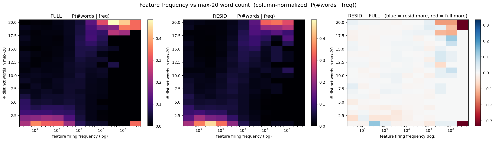
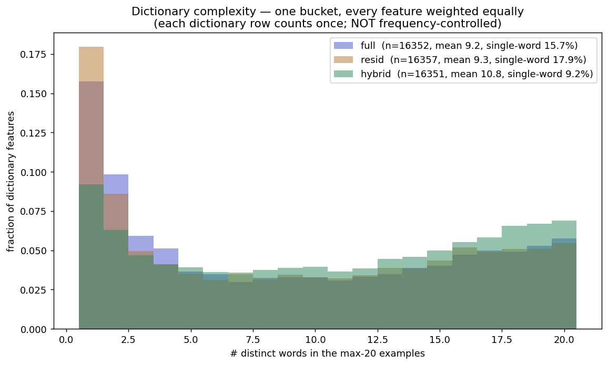

Interpretability · SAE feature analysis · Gemma-2-2b layer 13
A two-day investigation into whether training a sparse autoencoder on the residual (activation minus a linear prediction from the token embedding) produces fewer single-token features than a normal SAE — and a methodological trap that made the answer look different depending on where I looked.
I trained two sparse autoencoders (SAEs) on the layer-13 residual stream of Gemma-2-2b. Both are BatchTopK SAEs, 16,384 features, k=64, trained on 50M tokens with identical settings. The only difference is the input:
The idea: token identity is the “easy,” linearly-predictable part of the activation. If I subtract it out, maybe the SAE stops wasting features on trivial single-token detectors (features that just fire on one word) and spends them on higher-level concepts instead.
The linear map explains a good chunk of the activation — here’s how much variance it captures per layer (I used layer 13):
Test R² of the linear map (embedding → activation), by layer. Layer 13 (highlighted) sits in a sweet spot: enough token signal to remove, enough context left to matter.
Both SAEs reconstruct the true activation about equally well (the residual SAE’s error on r, scaled back, matches the full SAE’s error on h at ~0.14 FVU), so any difference between them isn’t just one fitting better than the other.
A feature is trivial if it just fires on a single token — it’s interpretable, but it’s only re-detecting a word the embedding already told the model about. To measure it, for each feature I take its top activating examples and compute two things over the words they fire on:
Words are normalized first, so Happy / happy / happy count as one. This whole write-up is really the story of getting this one measurement right.
Did: Computed the trivial-feature fraction for both SAEs on 100k tokens.
Found: Basically identical — 2.7% vs 2.7%. Looked like a flat null.
100k tokens is far too small. A typical SAE feature fires on roughly 1 in 10,000–1,000,000 tokens, so at 100k I was only measuring the most frequent features and missing most of the dictionary. (Neuronpedia’s dashboards use ~4M tokens.)
Did: Cleaned up the metric (top-20 examples, string normalization, added the distinct-words measure) and scaled to 4M tokens using a streaming method, so ~99.8% of features got measured.
Found: Still no clear difference in the distributions. If anything, the residual looked slightly more trivial in aggregate — 18% vs 16% pure single-word features — the opposite of the hypothesis.
Did: Grouped features into firing-frequency bins and compared the two SAEs within each bin — because rare features are naturally more trivial, and the two SAEs might have different mixes of rare vs common features.
Found: The “residual is more trivial” from Test 2 was a mirage. It came entirely from the residual SAE having more rare features (which are intrinsically more trivial), not from its features being more trivial at any given frequency.
At matched frequency, there is no real difference — the residual is even slightly less trivial in most bins. The naive aggregate comparison was misleading; once controlled, it’s a clean null. Lesson: frequency is a confound that can flip the sign of the result.
Did: Built a text “dashboard” (like a homemade Neuronpedia) showing, per feature: how often it fires, an activation histogram, which tokens it predicts, and its top examples with context. Then inspected specific features in both SAEs.
Fires on “district” across totally different meanings (legal, governmental, geographic). It doesn’t care about meaning, just the word. Genuinely trivial — a pure token detector. The metric got this one right.
Fires on “health” but specifically in healthcare-policy contexts, and it predicts the token “insurance.” So it’s a genuinely meaningful feature — yet the metric flags it as trivial because its top examples are all one word.
“Single-token” ≠ “useless.” The metric flags token-bound features, but some of them are real, useful concepts. Also: both SAEs have the same district and health detectors — so residualization didn’t delete these concepts.
Did: The systematic version of Test 4. For 100 single-token features in one SAE, find the word each fires on, then find the feature that fires most on that word in the other SAE, and check if it’s still single-token or has broadened. Did both directions, plus a control matching each SAE against itself to measure how much apparent “change” is just noise.
| direction | became multi-word | self-control (noise floor) | real effect |
|---|---|---|---|
| full → residual | 30% | 8% | ~22% |
| residual → full | 18% | 6% | ~12% |
Subtracting the self-control noise floor: ~22% of the full SAE’s single-token features broaden in the residual, and ~12% of the residual’s are “new.”
This looked like a real result: feature churn — the count of single-token features stays flat, but which concepts have them turns over by 12–22%. I was ready to write this up… and then Test 6 undercut it.
This whole analysis judged triviality from each feature’s strongest ~20 activations. Test 6 shows that’s exactly the wrong place to look.
Did: Instead of only the top activations, binned each feature’s activations by strength (strongest fifth, next fifth, …) and checked triviality in each bin. A feature might be single-token at its peak but fire on many words when it’s activating weakly.
Found: exactly that. Two examples, both labeled “single-token” by the top-20 metric:
“order” all the way down. A real token detector.
Its top-20 are all “news,” so the metric said single-token. But it’s really a misinformation / news-credibility concept feature — broad and meaningful. The peak hid it.
Another one fired on “subscribing / signing / up / for” across bins — a “sign up / subscribe” concept feature, again mislabeled single-token from its peak.
The top-20 metric is peak-biased: it labels a feature by its strongest activations, where almost everything looks token-specific. Several “trivial” features are actually the higher-level features I was hoping to find.
Did: Measured triviality three ways over 4M tokens: on the peak (strongest firings), on a uniform sample of all firings, and on an activation-weighted sample (firings counted in proportion to how strongly the feature fired — the principled middle).
Fraction of features that are pure single-word, same features, measured three ways. An ~80× swing.
| metric | single-word (full) | single-word (resid) | effective #words (full) | eff #words (resid) |
|---|---|---|---|---|
| Peak (strongest) | 15.7% | 17.9% | 8.1 | 8.1 |
| Weighted (principled) | 0.9% | 1.5% | 13.2 | 12.8 |
| Uniform | 0.3% | 0.2% | 14.5 | 14.1 |
“Effective #words” = exp(entropy) of the word distribution — how many words the feature effectively responds to (1 = pure single-word). Out of 20.
Even the activation-weighted metric lands near the broad end (≈13 effective words, ~1% single-word), not halfway. So single-token-ness lives only at the razor-thin activation peak; the moment you weight in any of a feature’s typical firing, it looks broad. The ~16% was a peak artifact.
And on the corrected metric, full vs residual is null — both ~1% single-word, ~13 effective words. The ~22% churn from Test 5 was a peak-behavior effect that disappears once you stop looking only at peaks. Within frequency bins it’s mixed and tiny.
Did: Took the metric interpretability dashboards actually use — the number of distinct words in a feature’s max-20 examples — and plotted it against firing frequency as a 2D heatmap, one panel per SAE. Each column is normalized, so it shows P(#words | frequency): among features that fire this often, how many words do they spread over? A third panel shows residual − full. This folds the frequency control (Test 3) and the residual comparison into a single picture, with no arbitrary buckets.

Left / middle: P(#words | freq) for the full and residual SAEs (brighter = more mass). Right: residual − full (blue = residual has more mass there, red = full does). Firing frequency on a log x-axis, half-order-of-magnitude bins.
Found: one dominant structure — a diagonal ridge from bottom-left to top-right. Rare features (left) are pinned at 1–2 words; common features (right) spread across ~20. So a feature’s word-count is largely a function of how often it fires, not of how abstract it is: a feature isn’t “complex” because it encodes a rich concept — much of its word-count is simply “it fired enough times to have seen many words.”
This is the frequency confound as a picture: complexity tracks frequency, so any triviality comparison that doesn’t hold frequency fixed is mostly re-measuring the frequency mix. And the difference panel is near-white everywhere — conditioned on frequency, full and residual have the same word-count distribution at every frequency. The residual null holds. (The faint blue in the rare corner = residual is a hair more single-token among rare features; the lone red cell at the far top-right is the ~2% common tail, too sparse to trust.)
If the two SAEs are identical at matched frequency, where did the aggregate “residual is more trivial” from Test 2 come from? From the frequency mix itself. Here is how many alive features each SAE places in each half-order-of-magnitude frequency bin:
| firing frequency | full | resid |
|---|---|---|
| 20 – 63 | 176 | 351 |
| 63 – 200 | 542 | 955 |
| 200 – 632 | 1,123 | 1,793 |
| 632 – 2,000 | 2,463 | 2,206 |
| 2,000 – 6,325 | 3,408 | 2,796 |
| 6,325 – 20,000 | 5,124 | 4,897 |
| 20,000 – 63,246 | 3,132 | 2,996 |
| 63,246 – 200,000 | 322 | 276 |
| > 200,000 | 59 | 79 |
| total alive | 16,349 | 16,349 |
Alive features per half-order-of-magnitude frequency bin. ~80% of each dictionary lives in the 632–63k range (peak bin: 6.3k–20k); the common tail (>63k) is only ~2%.
The tell is the rare tail. Below 632 firings the residual holds 3,099 features (19%) vs the full’s 1,841 (11%) — nearly double in the two rarest bins. Rare features are intrinsically single-token (they’ve simply seen fewer contexts), so a dictionary carrying more of them looks more trivial on average — even though, feature-for-feature at matched frequency, nothing has changed. That is the whole “residual is more trivial” effect: a frequency-composition artifact, not a complexity difference. (Why the residual’s dictionary skews rarer is a separate question these tests don’t pin down — plausibly, removing the token-embedding prediction frees the SAE from re-encoding common tokens — but the shift in the mix is real while the change in per-feature triviality is not.)
Two confounds — firing frequency and peak-sampling — each independently manufactured an apparent effect that vanished under the right control (matched-frequency bins; activation-weighted measurement). The negative result is only trustworthy because those controls are in place.
That said, the null is specifically for a frozen map. Training the map jointly with the SAE tells a very different story — the follow-up below.
Follow-up · after the null · mentor’s suggestion
The null above is for a frozen map: fit the linear map first, freeze it, then train the SAE on the leftover residual. My mentor suggested the obvious next move — train the map and the SAE together, end-to-end, so they coordinate. Call it the hybrid SAE:
The map becomes a smart per-token baseline (versus the SAE’s single global bias), it costs zero sparsity budget (k stays 64), and — crucially — it’s optimized with the SAE rather than greedily on its own.
| system | FVU on h | vs full |
|---|---|---|
| full SAE | 0.1426 | — |
| frozen map + residual SAE | 0.1445 | +0.0019 (worse) |
| hybrid (jointly-trained map) | 0.1376 | −0.0050 (better) |
Fraction of variance unexplained on the raw activation, 2M tokens, matched dictionary/k. Lower = better.
The hybrid beats the plain SAE by ~3.5% relative FVU at the same sparsity. The frozen map ties (even slightly loses) — so it’s specifically the joint training that helps: the map settles where it leaves the SAE an easier residual, instead of minimizing its own error greedily. Cost: ~5M extra dense parameters (the map), so the honest claim is “better reconstruction at matched sparsity,” not a free lunch.
This is the part that reaches back to the original question. On the max-20 metric, the hybrid’s single-token fraction is roughly halved:
| SAE | single-word % (peak) | distinct words (peak) | eff #words (weighted) |
|---|---|---|---|
| full | 15.7% | 9.20 | 13.2 |
| residual | 17.9% | 9.25 | 12.8 |
| hybrid | 9.2% | 10.77 | 14.5 |
And unlike the residual’s aggregate mirage, this survives the frequency control: hybrid features are broader than full’s in every firing-frequency bin — even though hybrid has more rare features (which should bias it toward looking more trivial). So it’s a real per-feature effect, not a composition artifact.
P(#words | frequency) for each SAE, plus HYBRID − FULL (right). Unlike the near-white resid−full panel from Test 8, here mass visibly drains out of the single-token corner (red, bottom-left) and shifts up into broader features — a real shift.

Every feature weighted equally (no frequency control). Even in this deliberately naive view, hybrid (green) has a visibly smaller single-token spike and more mass at the broad end.
Two-for-one: the hybrid reconstructs better and its sparse dictionary is cleaner, at matched sparsity. This is the original hypothesis (“residualize → fewer trivial features”) finally working — but via joint training, which the frozen residual never delivered.
The clinching check: for a given concept word, find the feature that fires most on it in each SAE. Every time, full uses a single-token detector and hybrid uses a broader coherent concept.
| concept | full — distinct (peak) | hybrid — distinct | what hybrid’s feature is |
|---|---|---|---|
| district | 1 | 7 | federal district court / legal filings |
| news | 1 | 1 (10 wtd) | news reporting |
| health | 1 | 5 | single-payer / universal healthcare |
| insurance | 1 | 5 | health insurance / coverage |
| election | 1 | 16 | electoral politics |
| climate | 1 | 1 (10 wtd) | climate change |
“Distinct” = unique tokens in the feature’s max-20 examples (1 = pure single-token). Full is single-token on every concept; hybrid is broader on every one.
Three of these, straight from the feature dashboards (highlighted token = where the feature fires):
Full fires on the word “health.” Hybrid fires on the single-payer / universal-coverage concept — health, payer, universal, everyone, coverage.
Full fires on “election.” Hybrid spreads across the whole electoral field — ballot, incumbent, race, voters, challenger (16 distinct words at peak vs full’s 1).
Full fires on “district” across all senses. Hybrid specialized into the federal-district-court / legal-filing context — the bare token got decomposed into a context concept.
(1) The single-token detection didn’t vanish — it moved into the dense map. The sparse dictionary is cleaner; the model isn’t representing fewer tokens. (2) It’s word → topic, not word → abstraction — hybrid features are broader topical concepts (health insurance, climate change), not abstract features like “sycophancy.” (3) Purely-lexical tokens can get absorbed rather than broadened: hybrid has no clean “district” feature at all — the map ate the bare token signal, and the best match specialized to the legal sense. (4) The FVU gain is modest and buys ~5M dense params.
Why are the hybrid’s features cleaner — is it because the map removed the token from what the SAE sees (its encoder input is the residual), or from what it has to reconstruct (its target is the residual)? To separate those, I trained a third variant, “outbias”: the encoder sees the full activation h (token and all), and the jointly-trained map is added only at the output, so the SAE still reconstructs the residual h−P. Same encoder input as full; same reconstruction target as hybrid.
| SAE | encoder sees | target | single-word % (peak) | eff #words (wtd) |
|---|---|---|---|---|
| full | h | h | 15.7% | 13.2 |
| hybrid | h−P | h−P | 9.2% | 14.5 |
| outbias | h | h−P | 7.7% | 15.6 |
Outbias — whose encoder sees the token — is the least trivial of the three, not the most. So the cleaner dictionary is not caused by hiding the token from the encoder. The clean comparison is full vs outbias: identical encoder input (h), different target — and outbias is far cleaner. So it’s the reconstruction target that does the work: making the SAE reconstruct the residual h−P instead of the full h pushes features toward context and away from single tokens, regardless of what the encoder sees. The encoder input is secondary — if anything, seeing the full h gives slightly broader features. On a clean eval, outbias reconstructs about as well as the hybrid (FVU 0.144 vs 0.143 at matched 20M training), and both clearly beat full (0.149) — so it’s a cleaner dictionary at essentially the same reconstruction, not a free win on both axes.
Bottom line: the frozen residual was a null, but jointly training the map (hybrid) is a genuine two-for-one — better reconstruction and a less-trivial dictionary at matched sparsity. The active ingredient is the coordination between map and SAE, not the mere subtraction of a per-token vector — and the ablation pins down why the dictionary gets cleaner: it’s that the SAE reconstructs the residual rather than the full activation, not anything about what its encoder sees.